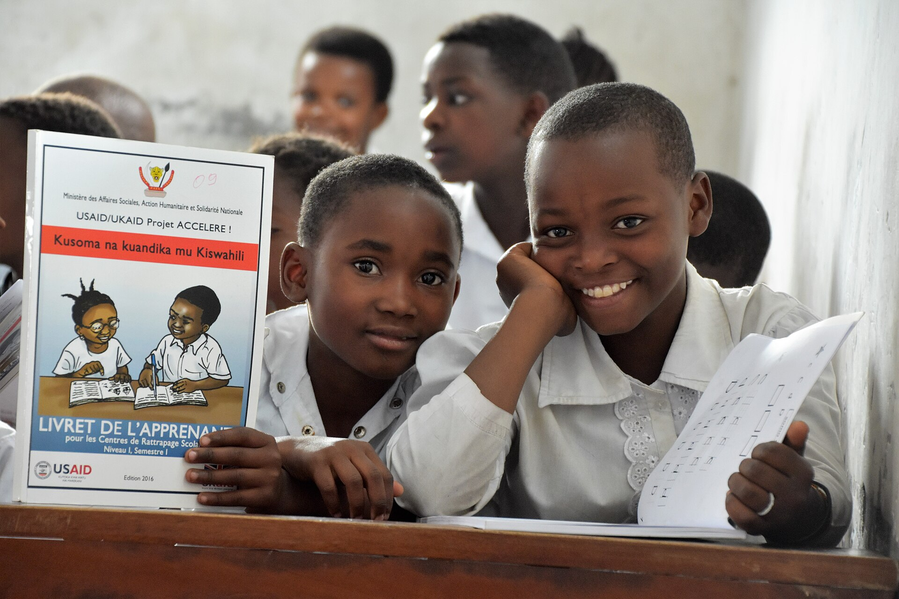
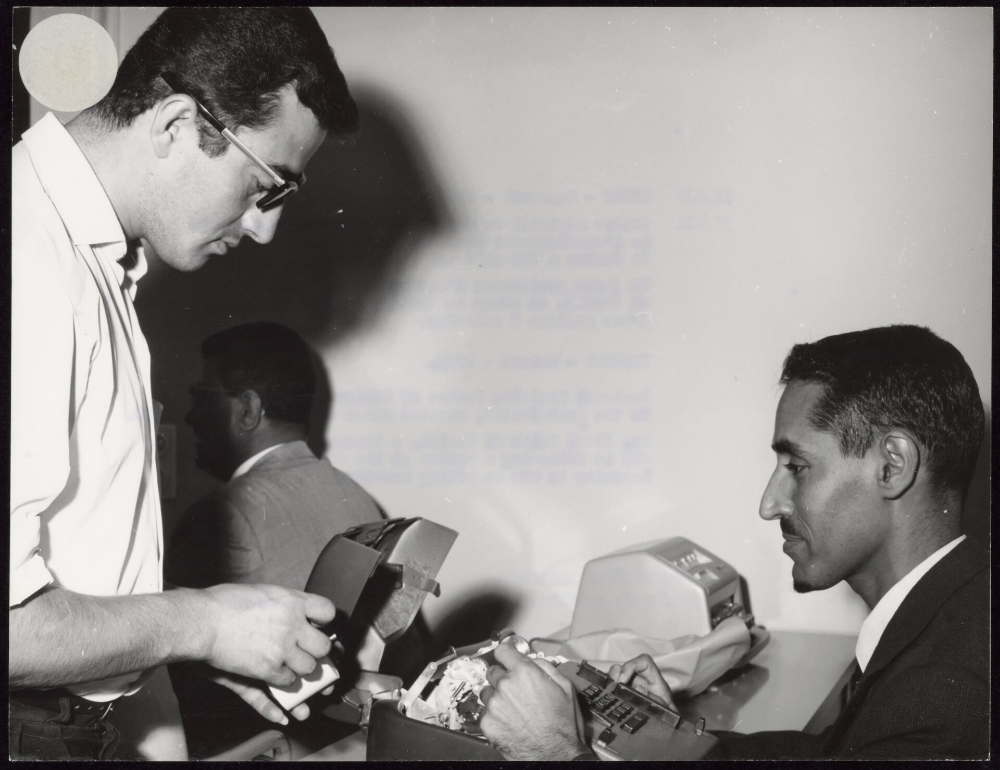
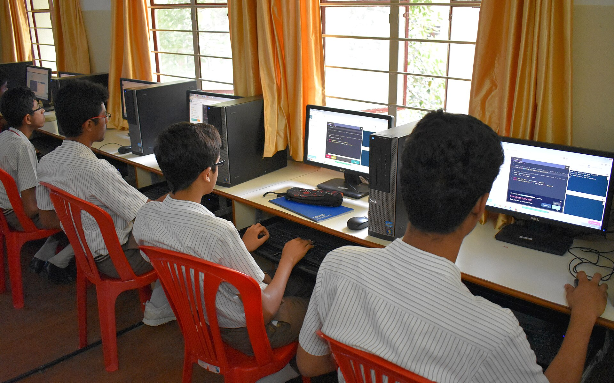
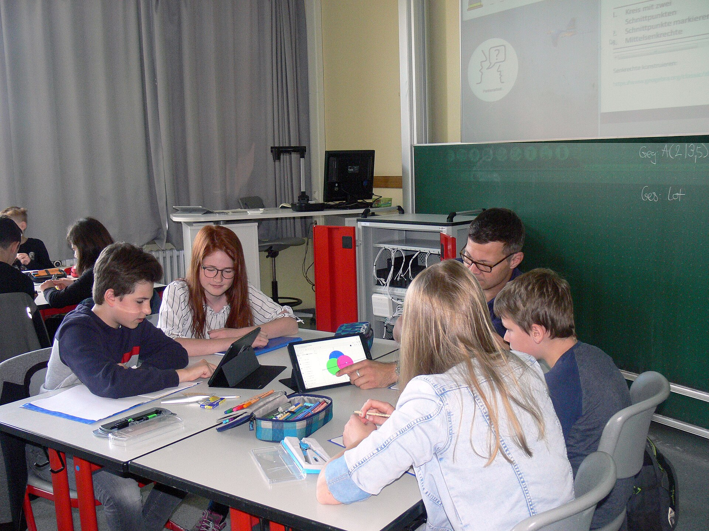
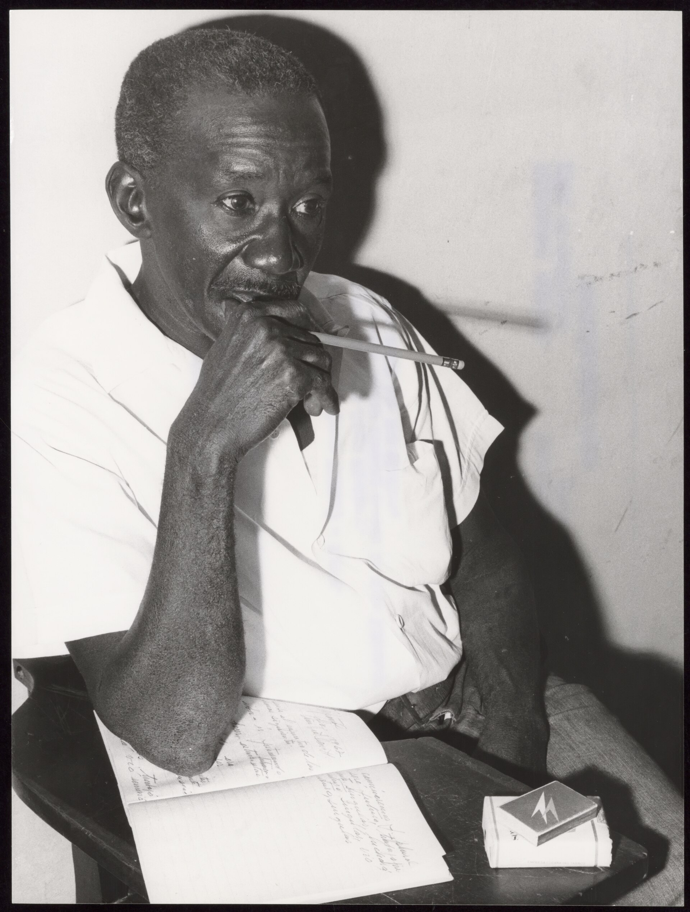

İngilizce konuşma
Yetişkin · küçük grup · yüz yüze
Kurs ve özel ders saatlerini tek bir haftalık sayfada görün.
Haftayı inceleHaftanın ritmi, ders ders belli olsun.
Bu örnek çizelgede günleri seçerek o günün kurslarını görüntüleyin. Saatler ve dersler örnek içeriktir.
Örnek program · Eylül–Haziran
Tüm örnek dersler görünür.
Yetişkin · küçük grup · yüz yüze
Ortaokul · bire bir · çevrim içi
Gençler · küçük grup · yüz yüze
Yetişkin · bire bir · çevrim içi
Ortaokul · küçük grup · yüz yüze
Her yaş · bire bir · yüz yüze
Lise · küçük grup · çevrim içi
Gençler · küçük grup · çevrim içi
Lise · bire bir · yüz yüze
Yetişkin · küçük grup · çevrim içi
Gençler · küçük grup · yüz yüze
Ortaokul · bire bir · çevrim içi
Küçük grup dersleri birlikte çalışmaya, bire bir saatler kişisel hedeflere ayrılır. Örnek programda yüz yüze ve çevrim içi seçenekler birlikte gösterilir.

Ders, aynı masanın çevresinde ya da ekranda ilerleyebilir.




Bu sayfa, kurs ve özel ders programını anlatan örnek bir tema taslağıdır.
Hayır. Ders adları, günler ve saatler örnek veri olarak yazıldı; işletme programıyla değiştirilmeli.
Dil, okul dersleri, sanat ya da beceri kursları işletmenin gerçek içeriğine göre listelenebilir.
Her program satırında ders biçimi ayrıca belirtilir. Gerçek konum veya bağlantı işletme tarafından eklenir.
İşletmenin gerçek iletişim adresi eklendiğinde ders ve uygunluk bilgisi oradan paylaşılabilir.
Örnek takvim, gerçek ders adları ve uygun saatlerle tamamlandığında kursiyerler aradıkları bilgiyi tek yerde görür.